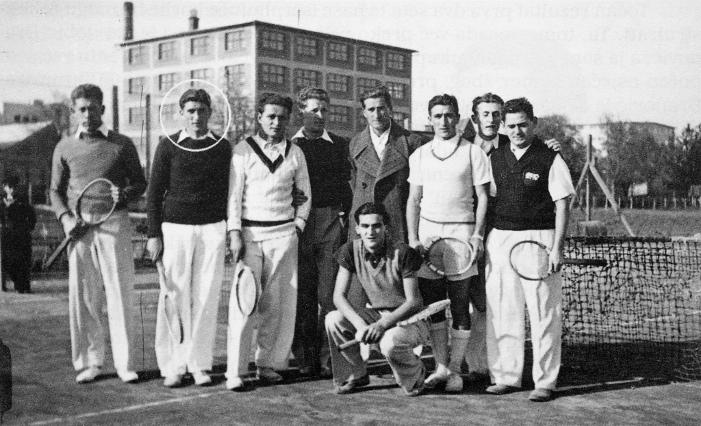
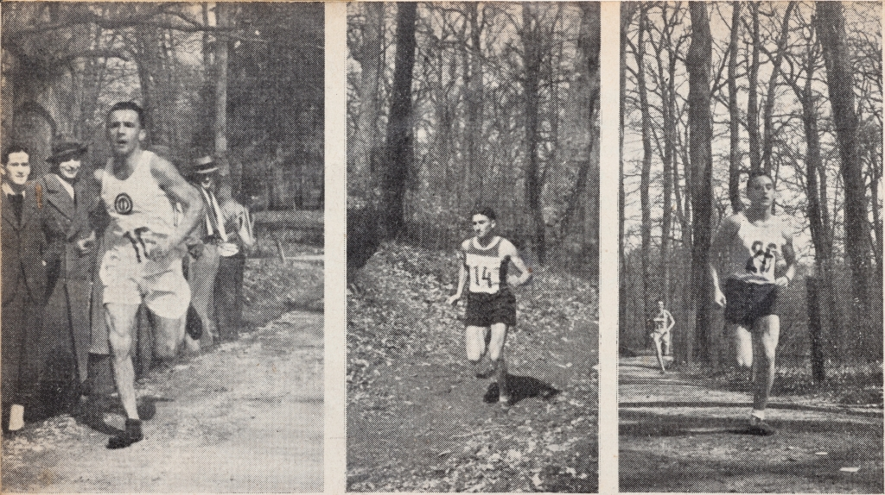
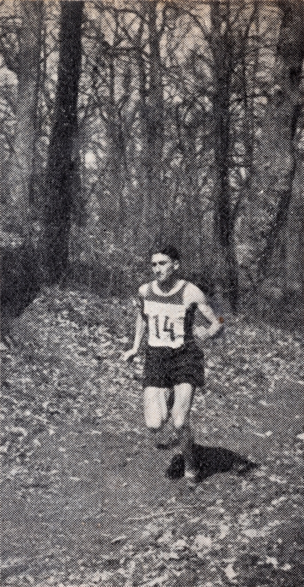
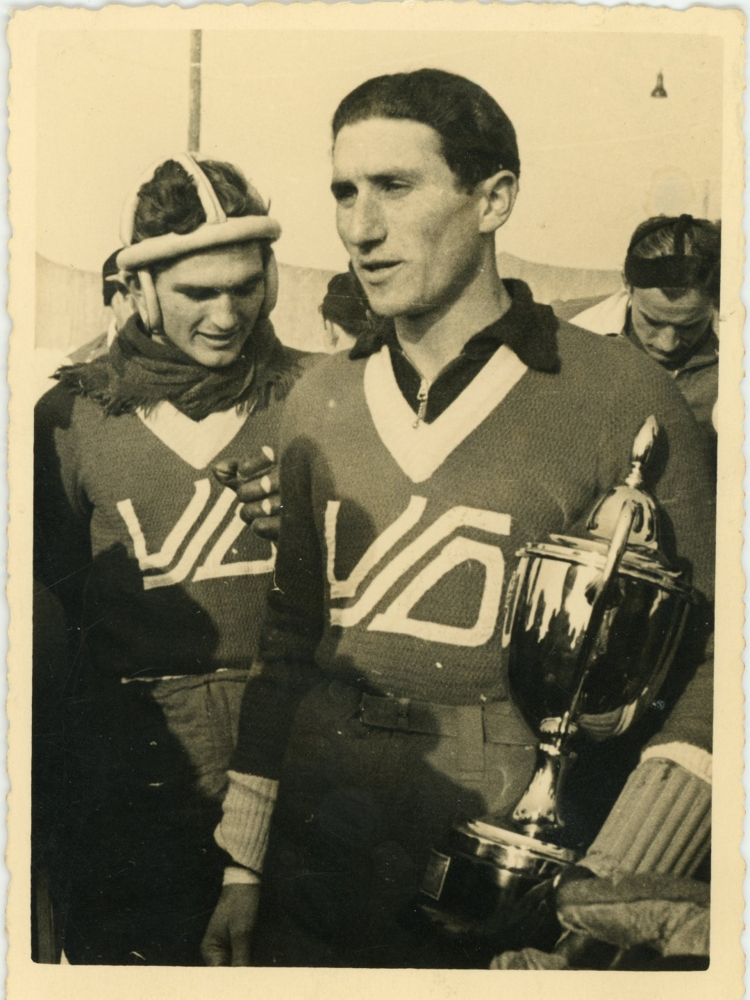
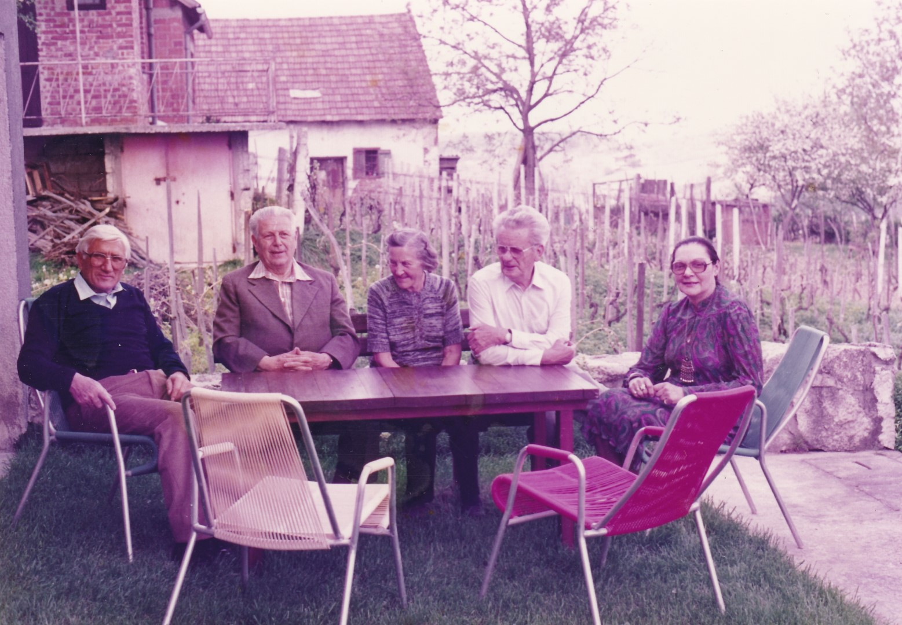

Artur Takač i Varaždin
KRONOLOGIJA
1920-1930-ih
rekreativno se bavi klizanjem, gimnastikom, odbojkom, tenisom, rukometom, nogometom i atletikom


Artur Takač s tenisačima Slavije, Varaždin, 1367/1/2005
1935.
član varaždinske cross-country štafete (4 x 3000 metara) koja je pobijedila na prvenstvu Hrvatske

Artur Takač u cross countryju, Olimpijski sport, 1935., GMV Knjižnica
1935.
član juniorske reprezentacije Kraljevine Jugoslavije
1936.
član varaždinske cross-country štafete (4 x 3000 metara) koja je pobijedila na prvenstvu Hrvatske

Artur Takač, Olimpijski sport, 1935., GMV Knjižnica
1937.
član varaždinske cross-country štafete (4 x 3000 metara) koja je pobijedila na prvenstvu Hrvatske
1938.
prvak Hrvatske na 400 i 800 metara
1939.
prvak Hrvatske u krosu
1941.
kapetan momčadi VŠD-a, prvaka Banske Hrvatske u hokeju na ledu

Artur Takač sa prijelaznim peharom dr. Šubašića nakon što su hokejaši VSD postali prvaci Banovine Hrvatske, Zagreb, 1941., GMV 106568
1970. -1990.
često je navraćao u Varaždin, službeno i privatno
